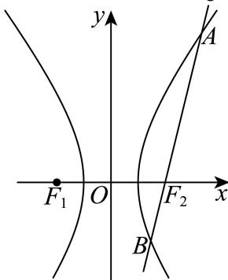
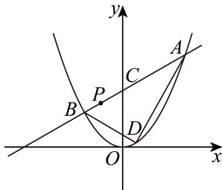
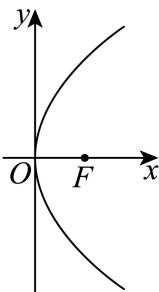

直线与圆的基本度量
通过斜率、配方、圆心距或点线距离求直线方程、弦长及半径。
嘉定 · 第7题 ★★☆☆☆ · 教师预估
直线l: y=x+1 与圆 C:x2+y2−4x−2y=0 相交所得的弦长为
考点：圆心到直线距离与弦长。
难度依据：直线与圆弦长；需完成一次转化或结合基本条件后计算
核查说明：已人工阅读底稿题干和解析；尚未逐页对照原PDF，不作为数学终审。
展开答案与解析
奉贤 · 第5题 ★☆☆☆☆ · 教师预估
直线3x + 4y − 5 = 0上的动点P和直线 3x+4y+10=0 上的动点Q，则点P与点Q之间距离的最小值是
考点：平行直线距离公式。
难度依据：平行直线间距离；直接调用定义或基本公式，运算路径短
核查说明：已人工阅读底稿题干和解析；尚未逐页对照原PDF，不作为数学终审。
展开答案与解析
奉贤 · 第6题 ★★☆☆☆ · 教师预估
已知θ是斜率为−1的直线的倾斜角，计算 sin(θ−2π)=
考点：直线倾角与三角函数。
难度依据：直线倾角与三角函数；需完成一次转化或结合基本条件后计算
核查说明：已人工阅读底稿题干和解析；尚未逐页对照原PDF，不作为数学终审。
展开答案与解析
崇明 · 第4题 ★☆☆☆☆ · 教师预估
求直线x = −2与直线 3x−y+1=0 的夹角为 .
考点：直线倾角及夹角。
难度依据：直线倾角与夹角；直接运用定义或基础公式，推理链短
核查说明：已人工阅读完整底稿题干及原解，未逐页对照正式PDF，分类不等于数学终审。
展开答案与解析
浦东 · 第3题 ★☆☆☆☆ · 教师预估
圆的方程为 ∣x2+y2−4x+6y+12=0 ，则该圆的半径为
考点：配方求圆半径。
难度依据：圆的一般方程化标准式；直接运用定义或基础公式，推理链短
核查说明：已人工阅读完整底稿题干及原解，未逐页对照正式PDF，分类不等于数学终审。
展开答案与解析
虹口 · 第5题 ★☆☆☆☆ · 教师预估
本题资料或解析有待核事项，预览不可作为已审定成品。
若直线l与直线y = x平行，且经过圆 x2−2x+y2 = 0的圆心，则l的方程为
考点：配方及点斜式。
难度依据：圆心与平行直线；直接运用定义或基础公式，推理链短
核查说明：解析圆心附近有多余公式噪声，需清理并核原式。；已人工阅读完整底稿题干及原解，未逐页对照正式PDF，分类不等于数学终审。；历史分类审查记录（不把旧记录直接判为当前未解决）：解析圆心附近有多余公式噪声，需清理并核原式。 本次只归组，未修改题干、答案或专题归属；上述具体疑点仍交回源/数学复核处理。
展开答案与解析
圆锥曲线定义、参数与焦点几何
先识别焦点准线或离心率关系，再以几何定义处理焦点三角形及光学性质。
奉贤 · 第8题 ★★★☆☆ · 教师预估
抛物线 x˙2=4y 的准线与圆 x2+y2=r2 相切，将圆绕直径所在直线旋转一周形成一个几何体，则该几何体的表面积为
考点：抛物线准线与旋转几何。
难度依据：抛物线准线；需连接多个条件、建模或作分类讨论
核查说明：已人工阅读底稿题干和解析；尚未逐页对照原PDF，不作为数学终审。
展开答案与解析
宝山 · 第3题 ★☆☆☆☆ · 教师预估
抛物线x2 = 4y的准线方程是
考点：抛物线标准方程与准线。
难度依据：抛物线准线；直接运用定义或基础公式，推理链短
核查说明：已人工阅读完整底稿题干及原解，未逐页对照正式PDF，分类不等于数学终审。
展开答案与解析
崇明 · 第11题 ★★★☆☆ · 教师预估
本题资料或解析有待核事项，预览不可作为已审定成品。
已知双曲线 x2−b2y2=1(b>0) 的左、右焦点为 F1,F2 ，以O为顶点， F2 为焦点作抛物线交双曲线于P，且 ∠PF1F2=45∘ ，则 ∣b2=∣
考点：焦准定义及双曲线焦距。
难度依据：共焦点抛物线与双曲线；需连接多个条件或多步模型转化
核查说明：源解直接写PD=p但未展开由45度及抛物线定义推出交点横坐标为焦点横坐标的步骤，需核原图和补齐推导。；已人工阅读完整底稿题干及原解，未逐页对照正式PDF，分类不等于数学终审。；历史分类审查记录（不把旧记录直接判为当前未解决）：源解直接写PD=p但未展开由45度及抛物线定义推出交点横坐标为焦点横坐标的步骤，需核原图和补齐推导。 当前底稿已有回源补丁，涉及answer_and_solution；具体修复范围以底稿patches和2025二模-解析公式回源补丁-第二批.json为准。本题仍按可辨数学任务归组，不据分组宣称数学已审定。
展开答案与解析
徐汇 · 第10题 ★★★☆☆ · 教师预估
已知双曲线 a2x2−b2y2=1(a>0,b>0) 的左焦点为 F1 ，右焦点为 F2 .若双曲线的右支上存在一点P，使得直线 PF1 与以双曲线的实轴为直径的圆相切，切点为线段 PF1 的中点，则该双曲线的离心率为
考点：双曲线定义、圆切线与离心率。
难度依据：双曲线焦点三角形与切圆；需连接多个条件或多步模型转化
核查说明：已人工阅读完整底稿题干及原解，未逐页对照正式PDF，分类不等于数学终审。
展开答案与解析
普陀 · 第5题 ★☆☆☆☆ · 教师预估
设m > 2，拋物线 C:x2=2my 上的点P到C的焦点的距离为5，点P到y轴的距离为3，则m的值为
考点：焦准距离。
难度依据：抛物线焦点与准线；直接调用定义或基本公式，运算路径短
核查说明：已人工阅读底稿题干和解析；尚未逐页对照原PDF，不作为数学终审。
展开答案与解析
普陀 · 第15题 ★★★★☆ · 教师预估
设 ∵0,b>0 ，点 M(x0,y0) ，O是坐标原点， ∣OM∣=a. ，F是双曲线Γ: a2x2−b2y2=1 1的左焦点，若直线l: x0x+y0y=a2 经过点F，且与双曲线Γ的右支在第一象限内交于P点，则双曲线Γ的离心率的一个可能的值是（ ）
A. 25
B. 26
C. 27
D. 211
考点：双曲线焦点切线与渐近线。
难度依据：双曲线切线与离心率；需综合转化、参数分析或完整证明，推理链较长
核查说明：已人工阅读底稿题干和解析；尚未逐页对照原PDF，不作为数学终审。
展开答案与解析

杨浦 · 第11题 ★★★☆☆ · 教师预估
如图，阿基米德椭圆规是由基座､带孔的横杆､两条互相垂直的空槽､两个可动滑块A､B组成的一种绘图工具，横杆的一端C上装有铅笔，假设两条互相垂直的空槽和带孔的横杆都足够长，将滑块A､B固定在带孔的横杆上，令滑块A在中一条空槽上滑动，滑块B在另一条空槽上滑动，铅笔C随之运动就能画出椭圆.当A､B之间的距离为14厘米时，若需要画出一个离心率为 54 的椭圆，则B､C之间的距离为 .厘米.

考点：滑块轨迹半轴与离心率。
难度依据：椭圆规与离心率；需连接多个条件或多步模型转化
核查说明：已人工阅读完整底稿题干及原解，未逐页对照正式PDF，分类不等于数学终审。
展开答案与解析
松江 · 第2题 ★☆☆☆☆ · 教师预估
抛物线y2 = 8x的焦点到准线的距离是
考点：抛物线参数与焦准距离。
难度依据：抛物线焦准距离；直接运用定义或基础公式，推理链短
核查说明：已人工阅读完整底稿题干及原解，未逐页对照正式PDF，分类不等于数学终审。
展开答案与解析
长宁 · 第16题 ★★★★☆ · 教师预估
本题资料或解析有待核事项，预览不可作为已审定成品。
椭圆具有如下光学性质：如图， F1(−c,0),F2(c,0) 分别是椭圆 a2x2+b2y2=1 1的左、右焦点，从点 F1 发出的光线在到达椭圆上的点P后，经过到达点的切线反射后经过点 F2 ，有以下两个命题：

①若P是椭圆上除长轴端点外的一点，设法线与x轴的交点为M(t,0)，则 t∈(−ac2,ac2)
②若从 F1 发出的光线，经椭圆两次反射后，第一次回到 F1 所经过的路程为8c，则该椭圆的离心率为21 ；
则以下说法正确的是（ ）
A. ①是真命题，②是真命题
B. ①是真命题，②是假命题
C. ①是假命题，②是真命题
D. ①是假命题，②是假命题
考点：椭圆切线法线与光学性质；椭圆函数求导。
难度依据：椭圆切线法线与光学性质；椭圆函数求导；需多步建模、分类或参数约束
核查说明：原解法线斜率法除以x₀，x₀=0（短轴端点）情形须另验；结论t=0成立。；已人工阅读底稿题干和原解；未逐页对照PDF，不作为数学终审。；历史分类审查记录（不把旧记录直接判为当前未解决）：原解法线斜率法除以x₀，x₀=0（短轴端点）情形须另验；结论t=0成立。 本次只归组，未修改题干、答案或专题归属；上述具体疑点仍交回源/数学复核处理。
展开答案与解析
闵行 · 第11题 ★★★☆☆ · 教师预估
已知某星球的球心为F，半径为R，该星球的卫星的运行轨道是以F为一个焦点的椭圆，该椭圆的离心率为 53 ，卫星运行过程中离该星球表面最近的距离为R，若当卫星处于某位置时，用卫星上的光学仪器观测该星球，把光学仪器的镜头与星球表面被观测点的连线称为视线，任意两条视线所成的最大夹角称为张角，则卫星运行过程中张角的最小值为 ．（精确到0.1°）
考点：椭圆近远焦距；球体张角与反三角。
难度依据：椭圆近远焦距；球体张角与反三角；需组合两类关系并检查区间或等号
核查说明：已人工阅读底稿题干和原解；未逐页对照PDF，不作为数学终审。
展开答案与解析
静安 · 第3题 ★☆☆☆☆ · 教师预估
椭圆 4x2+3y2=1 的离心率是
考点：椭圆离心率。
难度依据：椭圆离心率；直接调用定义或基本公式，路径短
核查说明：已人工阅读底稿题干和原解；未逐页对照PDF，不作为数学终审。
展开答案与解析
黄浦 · 第3题 ★☆☆☆☆ · 教师预估
抛物线 iy2=x 的焦点到其顶点的距离为
考点：抛物线焦点距顶点。
难度依据：抛物线焦点距顶点；直接调用定义或基本公式，路径短
核查说明：已人工阅读底稿题干和原解；未逐页对照PDF，不作为数学终审。
展开答案与解析
圆及空间轨迹与几何最值
将模、垂直或距离比例条件转为平面或空间轨迹；空间角度最值应交代轨迹转化与可达性。
宝山 · 第12题 ★★★★☆ · 教师预估
本题资料或解析有待核事项，预览不可作为已审定成品。
空间中有相互垂直的两条异面直线 l1, l2 ，点A、 B∈l1,C, D∈l2 ，且 AB=4,CD=1 ，若 DA⊥DB ，且 AC=BC+2 ，则二面角 D−AB−C 平面角的余弦值最小为
考点：双曲线与球面约束下二面角最值。
难度依据：异面直线与二面角最值；需参数分类、构造递推或综合最值分析
核查说明：双曲面、球面与三角形可行参数范围论证较简，需回核原图并检验最值可取。；已人工阅读完整底稿题干及原解，未逐页对照正式PDF，分类不等于数学终审。；历史分类审查记录（不把旧记录直接判为当前未解决）：双曲面、球面与三角形可行参数范围论证较简，需回核原图并检验最值可取。 本次只归组，未修改题干、答案或专题归属；上述具体疑点仍交回源/数学复核处理。
展开答案与解析

杨浦 · 第7题 ★★☆☆☆ · 教师预估
已知复数z满足 ∣z−1+i∣=1 ，其中i为虚数单位，则|z|的最小值为
考点：复数轨迹圆与模最小值。
难度依据：复数模的几何最值；需一次转化并结合定义域或几何条件计算
核查说明：已人工阅读完整底稿题干及原解，未逐页对照正式PDF，分类不等于数学终审。
展开答案与解析
松江 · 第9题 ★★★☆☆ · 教师预估
已知点P为直线l: x+y+1=0. 上的点，过点P作圆N: (x−1)2+(y−1)2=1 的切线PA，切点为A，则 cos∠PNA 最大值为
考点：圆切线构造和距离最值。
难度依据：切线与点到直线距离最值；需连接多个条件或多步模型转化
核查说明：已人工阅读完整底稿题干及原解，未逐页对照正式PDF，分类不等于数学终审。
展开答案与解析

松江 · 第11题 ★★★★☆ · 教师预估
设向量 ⋅a=(x1,y1),b=(x2,y2) ，记 ?a⋆b=x1x2−y1y2 .若点 A1, A2, A3 为圆C：
x2+y2+4x−2y=0. 上任意三点，且满足 A1A2⊥A2A3 ，则 OA1⋆OA2+OA2⋆OA3 的取值范围是
考点：新运算化简、圆上线性函数范围。
难度依据：向量新运算；需参数分类、构造递推或综合最值分析
核查说明：已人工阅读完整底稿题干及原解，未逐页对照正式PDF，分类不等于数学终审。
展开答案与解析
浦东 · 第8题 ★★☆☆☆ · 教师预估
设M(x,y)为抛物线 y˙2=4x 上任意一点，若x+2y+m的最小值为1，则m的值为
考点：抛物线代换与配方。
难度依据：抛物线上线性式最值；需一次转化并结合定义域或几何条件计算
核查说明：已人工阅读完整底稿题干及原解，未逐页对照正式PDF，分类不等于数学终审。
展开答案与解析
虹口 · 第8题 ★★★☆☆ · 教师预估
已知z是实系数一元二次方程 x2+px+q=0 的一个虚根，且 .∣z−1∣=2 ，若z在复平面上所对应的点在抛物线 y˙2=4x− 上，则p = .
考点：复数模、抛物线与实系数方程。
难度依据：虚根及复平面轨迹；需连接多个条件或多步模型转化
核查说明：已人工阅读完整底稿题干及原解，未逐页对照正式PDF，分类不等于数学终审。
展开答案与解析
金山 · 第16题 ★★★★☆ · 教师预估
本题资料或解析有待核事项，预览不可作为已审定成品。
已知点A (x1,y1) 在圆 x2+y2=9. 上，点 B(x2,y2) 在圆 x2+y2=12 上，且
x1x2+y1y2=x1+x2−1 ,O为坐标原点.对于以下两个命题，判断正确的是（ ）
①在坐标平面内存在点P，使得 AP⊥BP 恒成立；
②三角形OAB面积的最小值为 22
A. ①是真命题，②是真命题
B. ①是假命题，②是真命题
C. ①是真命题，②是假命题
D. ①是假命题，②是假命题
考点：数量积转定点、三角参数化面积最值。
难度依据：坐标数量积与定点垂直；需参数分类、构造递推或综合最值分析
核查说明：原解只给面积下界，尚未显式验证取等条件可达；辅助角gamma区间需处理系数为负情况。；已人工阅读完整底稿题干及原解，未逐页对照正式PDF，分类不等于数学终审。；历史分类审查记录（不把旧记录直接判为当前未解决）：原解只给面积下界，尚未显式验证取等条件可达；辅助角gamma区间需处理系数为负情况。 本次只归组，未修改题干、答案或专题归属；上述具体疑点仍交回源/数学复核处理。
展开答案与解析

长宁 · 第11题 ★★★★☆ · 教师预估
现有一块正四面体木料PABC，其边长为3，现需要将木料进行切割，要求切割后底面ABC上任意一点Q到顶点P的距离不大于 7, ，则切割好后，木料体积的最大值是 ．（结果保留π）
考点：正四面体切割及曲边锥体体积；圆与三角形交域面积。
难度依据：正四面体切割及曲边锥体体积；圆与三角形交域面积；需多步建模、分类或参数约束
核查说明：已人工阅读底稿题干和原解；未逐页对照PDF，不作为数学终审。
展开答案与解析


青浦 · 第9题 ★★☆☆☆ · 教师预估
已知复数z、w满 ℜ∣z∣=2,z=(1+i)w （i是虚数单位），则|w+2|的最大值是
考点：复数模与圆的距离最值。
难度依据：复数模的几何最值；需完成一次转化或结合基本条件后计算
核查说明：已人工阅读底稿题干和解析；尚未逐页对照原PDF，不作为数学终审。
展开答案与解析
青浦 · 第10题 ★★★☆☆ · 教师预估
已知点P是抛物线 y2=8x 上一动点，点Q在圆 (x−5)2+y2=1 上运动，则P与Q两点间最短距离为
考点：点到圆心距离及二次函数最值。
难度依据：抛物线与圆距离最值；需连接多个条件、建模或作分类讨论
核查说明：已人工阅读底稿题干和解析；尚未逐页对照原PDF，不作为数学终审。
展开答案与解析

黄浦 · 第8题 ★★★☆☆ · 教师预估
已知a为常数，圆 (x−a)2+(y+a−2)2=r2(r>0) 与圆 x2+y2=1 有公共点，当r取到最小值时，a的值为
考点：动圆圆心距与最小半径。
难度依据：动圆圆心距与最小半径；需组合两类关系并检查区间或等号
核查说明：已人工阅读底稿题干和原解；未逐页对照PDF，不作为数学终审。
展开答案与解析
椭圆弦、面积与分点约束
联立直线与椭圆后利用韦达、弦长及面积，参数范围同时保留判别式和点位。
嘉定 · 第20题 ★★★★☆ · 教师预估
本题资料或解析有待核事项，预览不可作为已审定成品。
已知椭圆C： 9x2+y2=1 ．F为椭圆的右焦点，过椭圆上一点 P(3,0) 的直线 ⋮l1 交椭圆于另 −♯Q 点M为椭圆上任意一点

(1) (4分)求|MF|的最小值；
(2) (6分)当直线l1的斜率为1时，求 △PQM 面积的最大值及此时点M的坐标；
(3) (8分)若直线PQ与直线 ⟨l2:x=−3 交于点D，点D不在x轴上，Q关于原点的对称点为点R，直线PR与 i2 交于点E，求线段|DE|的取值范围
考点：(1)椭圆焦点距离；(2)弦与三角形面积最值；(3)直线联立及距离范围。
难度依据：椭圆焦点距离与弦三角形面积最值；需综合转化、参数分析或完整证明，推理链较长
核查说明：题干过P直线的交点Q等文字OCR损坏，需校对原卷。；已人工阅读底稿题干和解析；尚未逐页对照原PDF，不作为数学终审。；历史分类审查记录（不把旧记录直接判为当前未解决）：题干过P直线的交点Q等文字OCR损坏，需校对原卷。 本次只归组，未修改题干、答案或专题归属；上述具体疑点仍交回源/数学复核处理。
展开答案与解析
普陀 · 第20题 ★★★★☆ · 教师预估
设 a>b>0,m>0 ，点A、F分别是椭圆Γ: a2x2+b2y2=1 的上顶点与右焦点，且 ∣AF∣=2. ，直线 l:x−my−1=0 经过点F与Γ交于P、Q两点，O是坐标原点.
(1) (4分)求椭圆Γ的方程；
(2) (6分)若 m=3. ，点M是x轴上的一点，且 △MPQ 的面积为 136 ，求点M的坐标；
(3) (8分)若点G在直线x = 5上，向量 PG 在直线l上的投影为向量 PF ，证明 ∠PGQ<4π
考点：(1)焦点弦；(2)三角形面积；(3)向量投影与角。
难度依据：椭圆焦点弦与面积；需综合转化、参数分析或完整证明，推理链较长
核查说明：已人工阅读底稿题干和解析；尚未逐页对照原PDF，不作为数学终审。
展开答案与解析
松江 · 第20题 ★★★★★ · 教师预估
本题资料或解析有待核事项，预览不可作为已审定成品。
已知椭圆Γ: a2x2+b2y2=1(a>b>0) 的左右焦点分别为 F1, F2, ，上下顶点分别为 B1. 、
B2,△B1F1F2 是面积为 3 的正三角形，过焦点的直线交椭圆Γ于P、Q两点（P、Q分别在第一、四象限）.
(1) (4分)求椭圆Γ的离心率；
(2) (6分)已知点 M(0,m), m>0 ，求椭圆Γ上的动点R到点M的最大距离；
(3) (8分)求四边形 B1B2QI P面积的取值范围.
考点：(1)等边三角形求离心率；(2)动点到定点最大距离；(3)焦点弦四边形面积范围。
难度依据：椭圆焦点弦与面积范围；需处理新定义或多对象联动，包含一般性证明及边界
核查说明：题干四边形名称混入I，解析三角形面积sqrt3/2与题设sqrt3不符但后续参数按sqrt3计算；距离平方负号与韦达负号丢失，须逐式校核。；已人工阅读完整底稿题干及原解，未逐页对照正式PDF，分类不等于数学终审。；历史分类审查记录（不把旧记录直接判为当前未解决）：题干四边形名称混入I，解析三角形面积sqrt3/2与题设sqrt3不符但后续参数按sqrt3计算；距离平方负号与韦达负号丢失，须逐式校核。 本次只归组，未修改题干、答案或专题归属；上述具体疑点仍交回源/数学复核处理。
展开答案与解析

金山 · 第20题 ★★★★★ · 教师预估
本题资料或解析有待核事项，预览不可作为已审定成品。
已知椭圆Γ: 4x2+3y2=1 ，左右焦点分别为 F1,F2 ，上下顶点分别为A,B，左右顶点分别为 C,D, P,Q是Γ上异于椭圆顶点的两点.
(1) (4分)求 △AF1F2 的周长；
(2) (6分)若点Q在第一象限且满足 .△ABQ 的面积比 △F1F2Q 的面积大，求点Q的横坐标的取值范围；
(3) (8分)记点A在直线PQ上的投影为H，且直线CP的斜率是直线DQ的斜率的3倍，试判断：过点A,H,O(O为坐标原点)三点的圆是否为定圆？若是，求出该圆的方程；若不是，请说明理由.
考点：(1)焦点三角形周长；(2)面积比较与横坐标范围；(3)斜率比导出定点弦及垂足定圆。
难度依据：椭圆面积范围与定圆；需处理新定义或多对象联动，包含一般性证明及边界
核查说明：第三问联立直线条件缺失，y_P曾误写分母4k²+3，后文改为12k²+1；PQ方程点斜式正负号有OCR错误，须逐式复核。；已人工阅读完整底稿题干及原解，未逐页对照正式PDF，分类不等于数学终审。；历史分类审查记录（不把旧记录直接判为当前未解决）：第三问联立直线条件缺失，y_P曾误写分母4k²+3，后文改为12k²+1；PQ方程点斜式正负号有OCR错误，须逐式复核。 本次只归组，未修改题干、答案或专题归属；上述具体疑点仍交回源/数学复核处理。
展开答案与解析

黄浦 · 第20题 ★★★★☆ · 教师预估
椭圆Γ: a2x2+b2y2=1(a>b>0) 的左、右焦点分别为 F1(−c,0),F2(c,0)(c>0) ，过点 F1 的直线l与Γ 交于点P
(1) (4分)若c = 2，点P的坐标为 (2,2) ，求点 F2 到直线l的距离；
(2) (6分)当b ≤ c时，求满足 PF1⊥PF2 的点P的个数；
(3) (8分)设直线l与Γ的另一个交点为Q，− F1Q=λQP(λ∈R) ，点P的横坐标为 2c ，若Γ的离心率 e>21 ，求λ的取值范围
考点：（1）点到直线距离；（2）直径圆与椭圆交点个数；（3）焦点分点向量与离心率范围。
难度依据：椭圆焦点弦与圆交点；分点向量与离心率；需多步建模、分类或参数约束
核查说明：已人工阅读底稿题干和原解；未逐页对照PDF，不作为数学终审。
展开答案与解析

双曲线弦、渐近线与角度
结合焦点定义、斜率角及向量约束，区分同支异支和直线斜率不存在。
宝山 · 第20题 ★★★★☆ · 教师预估
本题资料或解析有待核事项，预览不可作为已审定成品。

已知双曲线 C:x2−3y2=1,F1 、 F2 分别是其左、右焦点，直线l与双曲线C的右支交于A、B两点.
(1) (4分)当直线l过点 F2 ，且 ∣AB∣=6H ，求 △ABF1 的周长；
(2) (6分)已知点N (−2, 3)，若直线AN、BN的斜率之和为0，且 tan∠ANB=34 ，当AN、BN分别与y轴交于点R、S时，求 △RSN 的面积；
(3) (8分)已知直线l过点F2，P是双曲线C上一点且位于第一象限，且满足− F2 OQ=2OP 的点Q在线段AB上，若 AB=2QF2 ，求点P的坐标.
考点：(1)双曲线定义与周长；(2)斜率和、夹角及截距面积；(3)焦点弦与向量条件。
难度依据：双曲线焦点弦与向量点；需参数分类、构造递推或综合最值分析
核查说明：第三问题干向量关系附近混入F2与异常上下标，需回核原题；韦达公式末尾杂入2。；已人工阅读完整底稿题干及原解，未逐页对照正式PDF，分类不等于数学终审。；历史分类审查记录（不把旧记录直接判为当前未解决）：第三问题干向量关系附近混入F2与异常上下标，需回核原题；韦达公式末尾杂入2。 当前底稿已有回源补丁，涉及answer_and_solution；具体修复范围以底稿patches和2025二模-解析公式回源补丁-第二批.json为准。本题仍按可辨数学任务归组，不据分组宣称数学已审定。
展开答案与解析


杨浦 · 第20题 ★★★★★ · 教师预估
本题资料或解析有待核事项，预览不可作为已审定成品。
已知双曲线Γ的标准方程为 x2−2y2=1 ，点P是双曲线Γ右支上的一个动点.

(1) (4分)求双曲线Γ的焦点坐标和渐近线方程；
(2) (6分)过点P分别向两条渐近线作垂线，垂足为点 P1,P2 ，求− PP1⋅PP2 的值；
(3) (8分)若 ∣OP∣>2, ，如图，过P作圆 O:x2+y2= 2的切线l，切点为M，交双曲线Γ的左支于 点Q，分别交两条渐近线于点A､B.设 ∣PQ∣=λ∣AB∣ ，求实数λ的取值范围
考点：(1)焦点与渐近线；(2)垂足向量数量积；(3)圆切线与双曲线截弦比范围。
难度依据：双曲线渐近线与切线弦长；需处理新定义或多对象联动，包含一般性证明及边界
核查说明：第三问联立渐近线的方程缺右端与0等符号，根号范围破损，需要逐式校对。；已人工阅读完整底稿题干及原解，未逐页对照正式PDF，分类不等于数学终审。；历史分类审查记录（不把旧记录直接判为当前未解决）：第三问联立渐近线的方程缺右端与0等符号，根号范围破损，需要逐式校对。 本次只归组，未修改题干、答案或专题归属；上述具体疑点仍交回源/数学复核处理。
展开答案与解析
虹口 · 第20题 ★★★★☆ · 教师预估
本题资料或解析有待核事项，预览不可作为已审定成品。
已知点 F1 和 F2 是双曲线 C:a2x2−y2=1(a>0) 的左、右焦点.
(1) (4分)若 y=x 是双曲线C的一条渐近线，求C的离心率；
(2) (6分)当 a=2Hmod ，若双曲线C上存在一点P满足 ∣PF1∣+∣PF2∣=4. ，求 △PF1F2 的面积；
(3) (8分)若在双曲线C上分别存在两点A和B，点A在第一象限，点B在第二象限，使得四边形F1BAF2 的面积为 2a2+1 ，且存在实数λ使 F2A=λF1B ，求实数a的取值范围.
考点：(1)渐近线及离心率；(2)焦点距离和与面积；(3)对称点、焦点弦和二次方程根范围。
难度依据：双曲线焦点三角形与面积参数；需参数分类、构造递推或综合最值分析
核查说明：第三问F2A=lambda F1B被转为上横线而非向量，需核正式符号；换元t=m²的语句乱码。；已人工阅读完整底稿题干及原解，未逐页对照正式PDF，分类不等于数学终审。；历史分类审查记录（不把旧记录直接判为当前未解决）：第三问F2A=lambda F1B被转为上横线而非向量，需核正式符号；换元t=m²的语句乱码。 本次只归组，未修改题干、答案或专题归属；上述具体疑点仍交回源/数学复核处理。
展开答案与解析
长宁 · 第20题 ★★★★★ · 教师预估
本题资料或解析有待核事项，预览不可作为已审定成品。
已知双曲线Γ: a2x2−b2y2=1 的左、右焦点分别为 F1,F2 ，点A是其左顶点，点P是双曲线上一点，且位于第一象限，若双曲线Γ的离心率 e=2,b=23.
(1) (4分)求双曲线Γ的方程；
(2) (6分)若三角形 APF2 是等腰三角形，求点P的坐标；
(3) (8分)直线 PF2 不垂直于x轴，且与曲线Γ的另一个交点为Q，若 ∠PF1Q 是锐角，求直线 PF2 的斜率的取值范围
考点：（1）离心率求双曲线方程；（2）等腰三角形三种情况；（3）联立韦达及锐角数量积。
难度依据：双曲线等腰三角形与角度斜率；锐角数量积条件；需证明新定义命题或完成复杂参数分类
核查说明：第（3）问推导出的(9−7k²)/(3−k²)<0与随后区间解相反；需核原卷。还应排除k=0对应P不在第一象限的情况，不能照抄区间。；已人工阅读底稿题干和原解；未逐页对照PDF，不作为数学终审。；历史分类审查记录（不把旧记录直接判为当前未解决）：第（3）问推导出的(9−7k²)/(3−k²)<0与随后区间解相反；需核原卷。还应排除k=0对应P不在第一象限的情况，不能照抄区间。 本次只归组，未修改题干、答案或专题归属；上述具体疑点仍交回源/数学复核处理。
展开答案与解析

闵行 · 第20题 ★★★★★ · 教师预估
已知双曲线Γ: x2−3y2=1 的右焦点为F，过点F的直线l交双曲线Γ右支于A、B两点（点A在x轴上方），点C在双曲线Γ上，直线AC交x轴于点Q（点Q在点F的右侧）
(1) (4分)求双曲线Γ的渐近线方程；
(2) (6分)若点A (2, 3)，且 tan∠BAC=21 ，求点C的坐标；
(3) (8分)若 △ABC 的重心G在x轴上，记 △AFG, △CQG 的面积分别为S1、 S2 ，求 S2S1 的最小值
考点：（1）双曲线渐近线；（2）角度条件与直线交双曲线；（3）重心条件转面积比及最小值。
难度依据：双曲线焦点弦与重心面积比；均值求比值最小；需证明新定义命题或完成复杂参数分类
核查说明：已人工阅读底稿题干和原解；未逐页对照PDF，不作为数学终审。
展开答案与解析


抛物线中点弦、垂直弦与面积
以焦准性质和弦端点代数关系连接中点、定点垂直及面积优化。
崇明 · 第20题 ★★★★☆ · 教师预估
本题资料或解析有待核事项，预览不可作为已审定成品。
已知抛物线Γ: x2=4y, ，过点 P(a,b) 的直线l与抛物线Γ交于点A、B，与y轴交于点C

(1) (4分)若点A位于第一象限，且点A到抛物线Γ的焦点的距离等于3，求点A的坐标；
(2) (6分)若点A坐标为(4,4)，且点B恰为线段AC的中点，求原点O到直线l的距离；
(3) (8分)若抛物线Γ上存在定点D使得满足题意的点A、B都有 DA⊥DB ，求a、b满足的关系式
考点：(1)焦点距离求点；(2)中点条件与点线距离；(3)数量积、韦达与定点条件。
难度依据：抛物线中点弦与定点垂直；需参数分类、构造递推或综合最值分析
核查说明：第三问数量积长式分母等TeX破损，需校对；固定点与弦端点不重合的可行性需保留。；已人工阅读完整底稿题干及原解，未逐页对照正式PDF，分类不等于数学终审。；历史分类审查记录（不把旧记录直接判为当前未解决）：第三问数量积长式分母等TeX破损，需校对；固定点与弦端点不重合的可行性需保留。 当前底稿已有回源补丁，涉及answer_and_solution；具体修复范围以底稿patches和2025二模-解析公式回源补丁-第二批.json为准。本题仍按可辨数学任务归组，不据分组宣称数学已审定。
展开答案与解析
徐汇 · 第20题 ★★★★☆ · 教师预估
已知抛物线C: y2=4x ，点F是抛物线C的焦点

(1) (4分)求点F的坐标及点F到准线l的距离；
(2) (6分)过点F作相互垂直的两条直线 l1,l2, l1 交抛物线C于点 P1, P2, l2 交抛物线C于点 Q1, Q2 ，求证： ∣P1P2∣1+∣Q1Q2∣1 为定值，并求出该定值；
(3) (8分)过点F且斜率为√3的直线交抛物线C于A、B两点，设点P不在直线AB上且PF为 △PAB 的内角平分线，求 △PA B面积的最大值.
考点：(1)焦点与准线；(2)垂直焦点弦长度倒数定值；(3)角平分线与阿波罗尼斯圆面积最值。
难度依据：抛物线焦点弦与轨迹最值；需参数分类、构造递推或综合最值分析
核查说明：已人工阅读完整底稿题干及原解，未逐页对照正式PDF，分类不等于数学终审。
展开答案与解析
静安 · 第20题 ★★★★☆ · 教师预估
本题资料或解析有待核事项，预览不可作为已审定成品。
如图，在直角坐标平面 xOy 中， △AiBiAi+1 中 (i=1,2,⋅⋅⋅,n,⋅⋅⋅) 为正三角形，且满足OA1=(−41,0),AiAi+1=(2i−1,0)

(1) (4分)求点 An 的横坐标 Xn 关于正整数n的表达式；
(2) (6分)求证：点 B1, B2,..., Bn.. 在抛物线Γ： y2=3x. 上；
(3) (8分)过（2）中抛物线Γ： y2=3x 的焦点F作两条互相垂直的弦AC和BD，求四边形ABCD面积的最小值
考点：（1）等差求和得顶点横坐标；（2）正三角形顶点代入抛物线；（3）垂直焦点弦与四边形面积最小值。
难度依据：奇数项累加及点坐标；抛物线焦点垂直弦面积；需多步建模、分类或参数约束
核查说明：第（1）问和式尾部多出log(2n−1)；第（2）问误把n写成x；第（3）问韦达乘积错标为和，需回源校净。；已人工阅读底稿题干和原解；未逐页对照PDF，不作为数学终审。；历史分类审查记录（不把旧记录直接判为当前未解决）：第（1）问和式尾部多出log(2n−1)；第（2）问误把n写成x；第（3）问韦达乘积错标为和，需回源校净。 本次只归组，未修改题干、答案或专题归属；上述具体疑点仍交回源/数学复核处理。
展开答案与解析
拼接、旋转与几何构造综合
拼接曲线分支或旋转构造须分别落实约束；新定义先译成代数与几何条件。
奉贤 · 第20题 ★★★★★ · 教师预估
本题资料或解析有待核事项，预览不可作为已审定成品。
如图1，曲线 Γ 是 4x2+b2y2=1 (y≥0) 与 b2y2−4x2=1 (y≥0) 组合的。
| 图1 |
图2 |
 |
 |
(1)（4分）4x2+b2y2=1 (y≥0) 过点 (−1,23)，求 b2y2−4x2=1 (y≥0) 的渐近线方程；
(2)（6分）b=2，设 T(0,t)，t∈[−22,32]，曲线 Γ 上找一个点 Q，使得 ∣TQ∣ 达到最小；
(3)（8分）若 b=1，如图2，存在过点 P(0,1) 的两条直线 l1、l2 与曲线 Γ 的交点分别是点 A、点 M、点 B、点 N，点 A 在第二象限，点 M 在第一象限。是否存在非零实数 λ 使得 MN=λAB 成立，请说明理由。
考点：(1)双曲线渐近线；(2)动点距离；(3)弦与向量条件。
难度依据：椭圆双曲线拼接曲线；需构造新对象、综合多问并处理一般性或参数边界
核查说明：本次为同名整理版PDF忠实转录，非整题数学终审；第(3)问沿用源解对图2位置与斜率范围的约定，不以转录完成宣称题设所有构型均已终审。；第三问题干MN=lambda MB与解析MN=lambda AB冲突，必须核原题及图，不能猜改。；已人工阅读底稿题干和解析；尚未逐页对照原PDF，不作为数学终审。；本地重编题目版PDF文本提取为MN=lambda AB；仍需视觉及正式原卷确认。；历史分类审查记录（不把旧记录直接判为当前未解决）：第三问题干MN=lambda MB与解析MN=lambda AB冲突，必须核原题及图，不能猜改。；本地重编题目版PDF文本提取为MN=lambda AB；仍需视觉及正式原卷确认。 本次只归组，未修改题干、答案或专题归属；上述具体疑点仍交回源/数学复核处理。
展开答案与解析
杨浦 · 第12题 ★★★★☆ · 教师预估
由若干个多边形所覆盖的区域，称为这些多边形的并集，例如图中，梯形ACDE是 △ACE 与矩形BCDE的并集.已知n是正整数，在平面直角坐标系 xOyH ，直线 ∴ln 的方程为 y=−2nx+n, ，若直线ln 交x轴于点 An ，交y轴于点 Bn ，则 △A1OB1,△A2OB2,⋅⋅⋅,△A10OB10 的并集，其面积为

考点：截距三角形增量与数列求和。
难度依据：直线截距三角形并集；需参数分类、构造递推或综合最值分析
核查说明：已人工阅读完整底稿题干及原解，未逐页对照正式PDF，分类不等于数学终审。
展开答案与解析

浦东 · 第16题 ★★★★★ · 教师预估
本题资料或解析有待核事项，预览不可作为已审定成品。
已知圆锥曲线Γ的对称中心为原点O，若对于Γ上的任意一点A，均存在Γ上两点B，C，使得原点O到直线AB，AC和BC的距离都相等，则称曲线Γ为“完美曲线”．现有如下两个命题：
①任意椭圆都是“完美曲线”；②存在双曲线是“完美曲线”
下列判断正确的是（ ）
A. ①是真命题，②是假命题
B. ①是假命题，②是真命题
C. ①②都是真命题
D. ①②都是假命题
考点：圆锥曲线、内切圆构造与反例。
难度依据：完美曲线定义；需处理新定义或多对象联动，包含一般性证明及边界
核查说明：源解椭圆存在性“动态调半径”与双曲线否定均缺严密论证，分类不视为证明已完成。；已人工阅读完整底稿题干及原解，未逐页对照正式PDF，分类不等于数学终审。；历史分类审查记录（不把旧记录直接判为当前未解决）：源解椭圆存在性“动态调半径”与双曲线否定均缺严密论证，分类不视为证明已完成。 本次只归组，未修改题干、答案或专题归属；上述具体疑点仍交回源/数学复核处理。
展开答案与解析


浦东 · 第20题 ★★★★★ · 教师预估
本题资料或解析有待核事项，预览不可作为已审定成品。
已知椭圆 C1 的方程为 3x2+y2=1，右顶点为 A，上顶点为 B，椭圆 C2 的中心位于坐标原点，两个椭圆的离心率相等。
(1) (4分) 若椭圆 C2 的方程是 a2x2+2ay2=1 (a>0)，焦点在 x 轴上，求 a 的值；
(2) (6分) 设椭圆 C2 的焦点在 x 轴上，直线 AB 与 C2 相交于点 C、D，若 ∣CD∣=3∣AB∣，求 C2 的标准方程；
(3) (8分) 设椭圆 C2 的焦点在 y 轴上，点 P 在 C1 上，点 Q 在 C2 上。若存在 △APQ 是等腰直角三角形，且 ∣AP∣=∣AQ∣，求 C2 的长轴的取值范围。
考点：(1)同离心率求参数；(2)直线与椭圆弦长；(3)等腰直角旋转与椭圆参数范围。
难度依据：同离心率椭圆与旋转轨迹；需处理新定义或多对象联动，包含一般性证明及边界
核查说明：题干已回源；原解析未全面数学审校，公式及其他问题仍需处理。；第三问点在曲线上条件OCR严重破损；第二问Delta>0推出lambda>12有误，实际为lambda>3/2，根号和方程组排版需修复。；已人工阅读完整底稿题干及原解，未逐页对照正式PDF，分类不等于数学终审。；历史分类审查记录（不把旧记录直接判为当前未解决）：第三问点在曲线上条件OCR严重破损；第二问Delta>0推出lambda>12有误，实际为lambda>3/2，根号和方程组排版需修复。；题干已回源；原解析未全面数学审校，公式及其他问题仍需处理。 当前底稿已有回源补丁，涉及question；具体修复范围以底稿patches和2025二模-题干回源补丁-首批.json为准。本题仍按可辨数学任务归组，不据分组宣称数学已审定。
展开答案与解析
青浦 · 第20题 ★★★★★ · 教师预估
本题资料或解析有待核事项，预览不可作为已审定成品。
如图，椭圆 C1:8x2+b2y2=1(0<b<22) 与双曲线 C2:b2x2−y2=1 在第一象限的公共点为A(xA,yA)(xA>0) .曲线Γ由两段曲线组成：当 x≤xA 时，曲线Γ与椭圆 C1 重合，当 x>xA 时，曲线Γ与双曲线 C2 重合.


(1) (4分)当 xA=2 时，求b的值；
(2) (6分)已知 ∣b=2, ，直线l过点 D(2,0) 与曲线Γ交于E、F两点，若 ⋅AD⋅EF=2 ，求直线l的方程；
(3) (8分)已知A(2, 1)，斜率为 k(k≥1) 的直线m过点 P(0,1) 与曲线Γ交于M、N两点，若S△AMN=λtan∠MAN ，求实数λ的最大值.
考点：(1)公共点求参数；(2)直线交点与数量积；(3)面积角关系及最值。
难度依据：椭圆双曲线拼接与直线；需构造新对象、综合多问并处理一般性或参数边界
核查说明：源解析第（2）问的排除论证不完整；新解析补足，并纠正源文代数笔误。；原解多处式子OCR损坏（如4/b^4、参数代换与最终有理式），需逐式核对原卷。；已人工阅读底稿题干和解析；尚未逐页对照原PDF，不作为数学终审。；历史分类审查记录（不把旧记录直接判为当前未解决）：原解多处式子OCR损坏（如4/b^4、参数代换与最终有理式），需逐式核对原卷。 本次只归组，未修改题干、答案或专题归属；上述具体疑点仍交回源/数学复核处理。
展开答案与解析